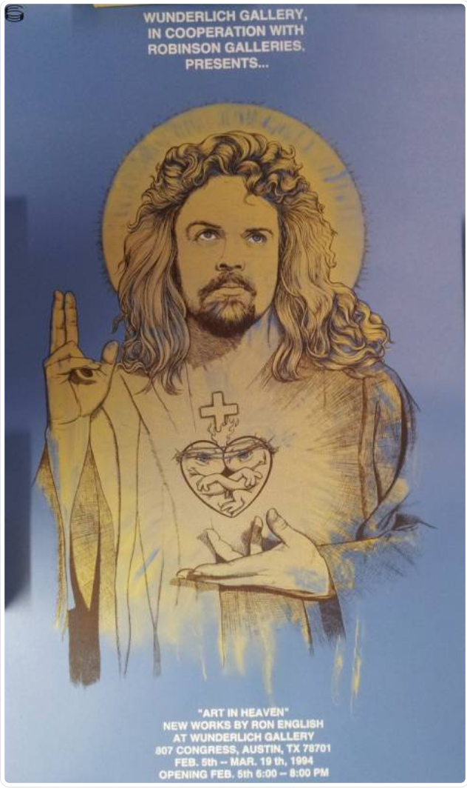
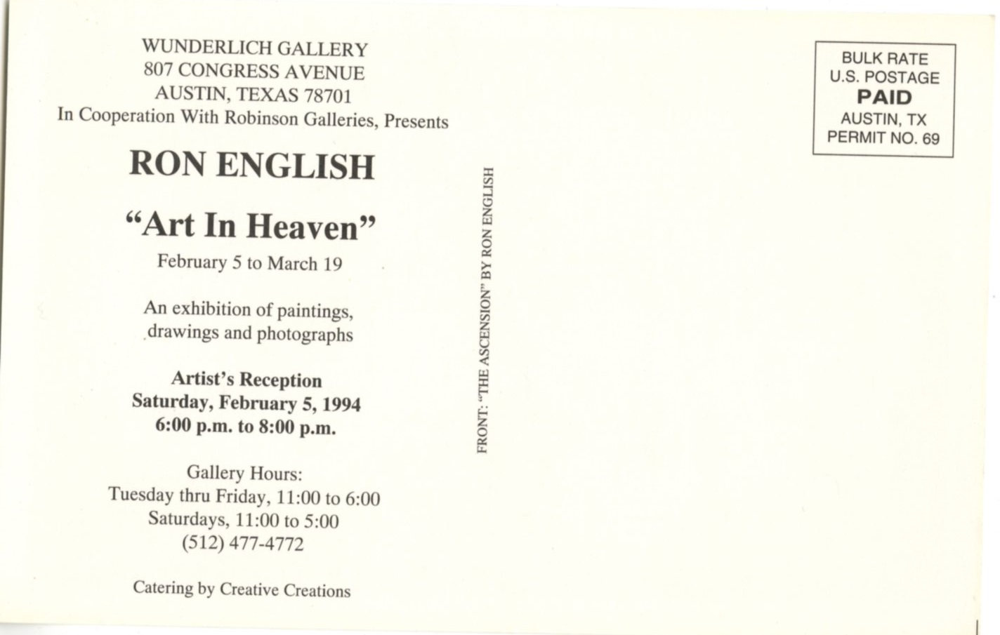

Art in Heaven
Wunderlich Gallery, Austin, Texas, 1994.


Confirmed Works Documented in the Exhibition
The following work is directly documented in surviving exhibition ephemera; additional works were also included in the exhibition.

The Ascension of English
1994
Notes
Ron English presented Art in Heaven at Wunderlich Gallery in Austin from February 5 through March 19, 1994. The exhibition card describes the show as an exhibition of paintings, drawings, and photographs and notes that it was presented in cooperation with Robinson Galleries.
The front of the exhibition card reproduces The Ascension of English, identifying one of the works associated with the show. The reverse of the card preserves the exhibition dates, venue address, reception details, and gallery hours.
A contemporary article in Sendero, issue VII, page 12, titled “Art in Heaven: New Works by Ron English at Wonderlich Gallery,†describes the exhibition as examining the role of the artist in religious imagery and the personal meanings behind the Jesus persona. The article states that one half of the exhibition featured traditional Catholic imagery, while the other drew on Gnostic scriptures that English had studied extensively.
The Sendero article also notes that across the paintings, drawings, and photographs, English used himself as a model for Jesus. It reproduces Mary, Jesus and the Little Drummer Boy (photo by Ron English, © 1993), providing additional documentation for the body of work shown in Austin.
The periodical spells the venue name as “Wonderlich Gallery,†while the exhibition card uses “Wunderlich Gallery.†The card provides the more formal venue identification and address.
Sources
- Exhibition card for Art in Heaven, Wunderlich Gallery, Austin, Texas, February 5–March 19, 1994; front reproducing The Ascension of English.
- Reverse side of the Art in Heaven exhibition card, listing venue address, artist reception, gallery hours, and cooperation with Robinson Galleries.
- Sendero, issue VII, p. 12, “Art in Heaven: New Works by Ron English at Wonderlich Gallery.â€